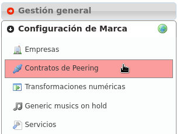
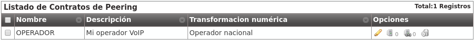
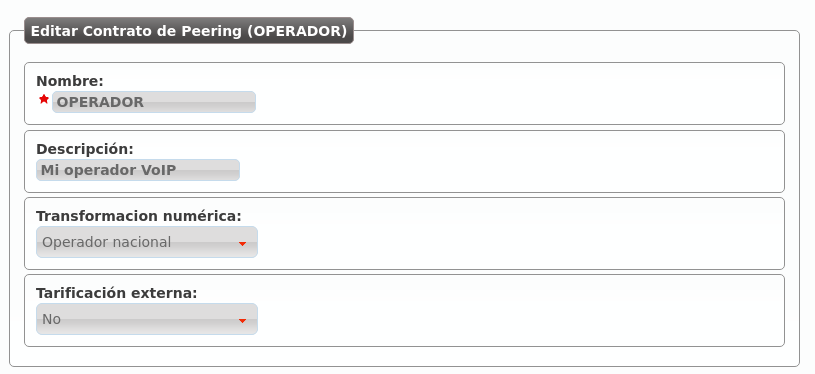
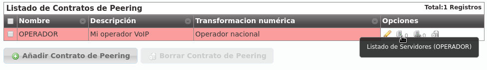
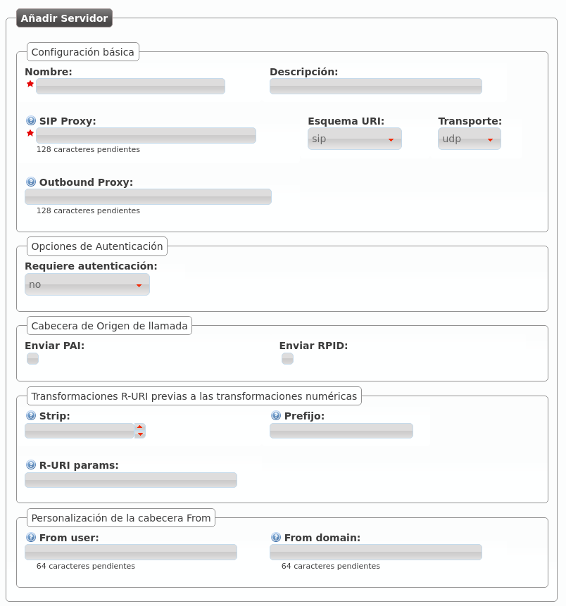
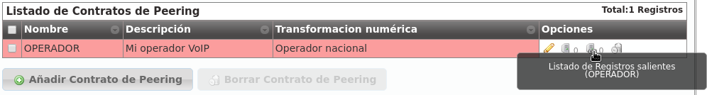
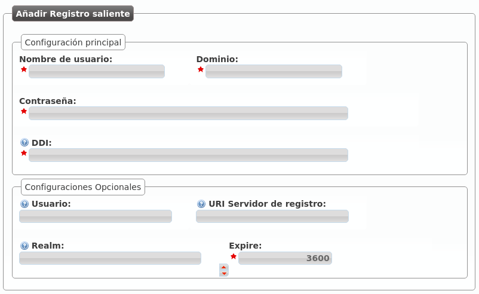

Configurar Contrato de Peering¶
En IvozProvider se entiende por Contrato de Peering el acuerdo entre un Operador de Marca y un Operador VoIP para sacar y recibir llamadas.
IvozProvider permite integrarse con Operadores IP por medio de la sección Contratos de Peering que pasamos a describir:
Datos básicos¶
Analicemos los campos de un PeeringContract de ejemplo:
Si entramos a editar este Contrato de Peering concreto:
- Nombre
Se utilizará para referencia a este Contrato de Peering.
- Descripción
Un campo adicional para escribir algún detalle.
- Transformación numérica
Transformaciones que se aplicarán al origen y al destino a lasnumeraciones que entren o salgan por este contrato de peering (ver Transformaciones numéricas).
- External tarification
Requiere del módulo de tarificación externa y permite tarificar llamadas entrantes a numeraciones especiales. Consultar a los desarrolladores de la solución en caso de estar interesados.
Importante
Los campos marcados con una estrella roja son obligatorios.
Peer Servers¶
El concepto de PeerServer se refiere a los distintos servidores SIP que puede tener un Operador IP para servir su dominio SIP. Para definir los PeerServers del OPERADOR que acabamos de definir, hay que pulsar este botón:
Tal y como indica el 0, no hay ningún PeerServer definido, por lo que añadimos uno:
- Nombre
Se utilizará para referencia a este PeerServer.
- Descripción
Un campo adicional para escribir algún detalle.
- SIP Proxy
Dirección IP (o registro DNS) del PeerServer. Si utiliza un puerto distinto a 5060, se puede indicar con ‘:’.
- Esquema URI
Los esquemas soportados son sip y sips. Dejar en ‘sip’ en caso de duda.
- Transporte
Los protocolos de transporte SIP soportados. En caso de duda, dejar ‘udp’.
- Outbound Proxy
Normalmente se deja vacío o se pone la IP del dominio indicado en SIP Proxy (para evitar resolución de dominios y hacer que el mensaje SIP contenga el dominio en lugar de una IP). Funciona como un proxy web:en lugar de enviar los mensajes SIP al destino de SIP Proxy, los envía a la IP:PUERTO de este campo.
- Requiere autenticación
Existen contratos de Peering que nos validarán por IP, otros necesitarán que nos autentiquemos en cada sesión que queramos establecer. En caso de ser del último grupo, este selector nos permite introducir un usuario y una contraseña para responder a esa autenticación.
- Cabecera de origen de llamada
Algunos operadores recogen el origen del From. Otros utilizan el From para validar la cuenta de cliente y necesitan cabeceras adicionales para recoger el origen. En caso de duda, marcar PAI.
- Transformaciones R-URI previas a las transformaciones numéricas
Permiten realizar cambios estáticos al destino de la llamada antes de aplicar las reglas de transformación numéricas mencionadas en Transformaciones numéricas. Se pueden quitar unos dígitos del comienzo, añadir un prefijo después e, incluso, añadir parámetros a la URI siguiendo el formato indicado. En caso de duda, dejar todo el bloque en blanco.
- Personalización de la cabecera From
Los operadores que muestren el origen en otras cabeceras (PAI/RPID), es posible que nos soliciten que el From User sea el número de cuenta de cliente y el From Domain (por ejemplo), su dominio SIP. En caso de duda, dejar en blanco.
Truco
Existen muchos campos para poder establecer peering con operadores de todo tipo, pero lo habitual será poner solo nombre y SIP Proxy (para los operadores que nos validen por IP) o nombre, SIP Proxy y Autenticación.
Advertencia
En caso de definir múltiples PeerServers para un PeeringContract, IvozProvider hará balanceo y failover utilizando todos. Es decir, a veces hablará a uno y otras veces a otro. En caso de que uno no le conteste, lo intentará con el resto hasta dar con uno que conteste.
Registro SIP¶
Hay operadores que exigen que tengamos un Registro SIP activo para que nos metan las llamadas de nuestras numeraciones. Es más, existen operadores que exigen un registro activo para poder sacar llamadas a través de ellos.
Nota
IvozProvider soporta peerings de todo tipo, pero recomendamos acordar peerings de tú a tú: sin autenticación, sin registro y validados por IP. Esto evita tráfico innecesario (autenticación en cada sesión y registros periódicos) y simplifica la configuración, quedándose casi todo con los valores por defecto.
Por este motivo IvozProvider permite configurar registros SIP periódicos por medio del siguiente botón:
Si creamos uno nuevo, nos encontramos con la siguiente ventana:
- Nombre de usuario
Número de cuenta de cliente o similar proporcionada por el operador que exige registro SIP.
- Dominio
Dominio o IP del servidor de registros. Habitualmente el mismo que sirve de Proxy SIP en el PeerServer.
- DDI
Se envía en la cabecera Contact y tiene que ser único a nivel de toda laplataforma. En PeeringContracts con un DDI asociado, se recomienda meter ese DDI. En caso de múltiples DDIs asociados, se recomienda meter uno de ellos. En caso de ningún DDI asociado, se recomienda meter un valor único (cualquier valor que te deje guardar).
- Usuario
Usuario de autenticación, prácticamente siempre es igual al “Nombre de usuario” por lo que se recomienda dejar en blanco.
- URI Servidor de registro
Normalmente se puede dejar en blanco ya que se deduce del Dominio introducido. Si no fuera así, poner una dirección IP con ‘sip:’ por delante.
- Realm
Dejar en blanco para aceptar el propuesto por el extremo contrario.Definir solo si de estar familiarizado el mecanismo de autorización de SIP y saber lo que este campo implica.
- Expire
Tiempo que IvozProvider sugerirá como tiempo de expiración del registro.
Truco
Al igual que ocurre con los PeerServers, existen múltiples campos. Hay que tener en cuenta, no obstante, que la mayoría de operadores no deberían de exigir registro y, los que lo hagan, habitualmente solo requerirán de usuario, dominio y contraseña.